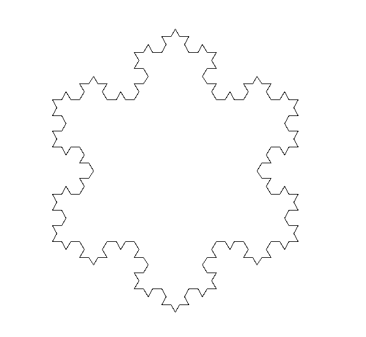
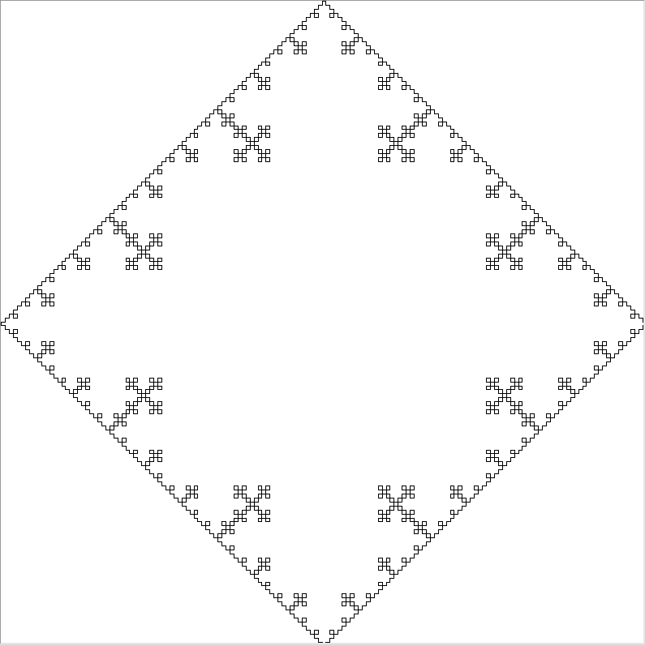
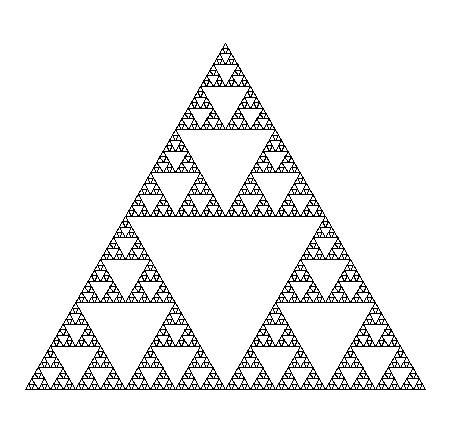

Review 复习
内容
Review 复习¶
Summary 知识点小结¶
Week 1¶
print()
Python as a calculator
[ ]:
print("We will have an quiz next week.")
print("下周我们会有一次测验。")
[ ]:
1 + 2 + (3 * (4 + 5))/(5 + 6 - 7)
Week 2¶
Variable
Case sensitive
Meaning of
=Assign multiple variables in one line
[ ]:
Today = "Saturday"
today = "saturday"
print(Today, today)
today, tomorrow, after_tomorrow = "Saturday", "Sunday", "Monday"
print(today, tomorrow)
Week 3¶
string & int
input
int() convert a value to integer type
if elif else
Meaning of
==
[ ]:
age_sophie = input("please input a number:")
age_sophie_int = int(age_sophie)
print(type(age_sophie), type(age_sophie_int))
if age_sophie_int < 10:
print("Sophie's age is smaller than 10")
elif age_sophie_int == 10:
print("Sophie's age is exactly 10")
else:
print("Sophie's age is greater than 10")
Week 4¶
Library: from random import randint, random
[ ]:
from random import randint, random
num1 = randint(1, 10)
print(num1)
num2 = random()
print(num2)
Week 5¶
Turtle Liabrary and methods：
from turtle import setup, reset, bye, pu, pd, bk, fd, left, right, st, ht
[ ]:
from turtle import setup, reset, bye, pu, pd, bk, fd, left, right
from turtle import st, ht, seth, goto
setup(800, 800, 0, 0)
[ ]:
reset()
[ ]:
ht()
[ ]:
st()
Week 6¶
whileSum of external angles of a convex polygon is always 360°.
[ ]:
n_edge, len_edge = 30, 50
step_degree = 360/n_edge
edge_drawn = 0
reset()
pu()
goto(0, -200)
pd()
[ ]:
from time import sleep
[ ]:
while edge_drawn < n_edge:
fd(len_edge)
left(step_degree)
edge_drawn += 1
sleep(1)
[ ]:
bye()
Week 7¶
使用
>=,<=进行“不少于”、“不多于”等比较理解掌握变量自增、自减代码的完整和简便写法（例如：
a = a + 1和a += 1)字符串中
\n,\t,\r的意义
[ ]:
num_min, num_max = 1, 100
cur_num, total = num_min, 0
while cur_num <= num_max:
total += cur_num
cur_num += 1
print("1+2+3+...+97+98+99+100={}".format(total))
if total == 5050:
print("your code produces correct answer")
else:
print("your codes have bugs.")
Week 8¶
while within if, if within while, while within while, if within if
print(*args, end="")
[ ]:
print("Sophie", end=" ")
print("and", end=" ")
print("Yunzi", end=" ")
print("are sister and brother.")
Week 9¶
True and False
andstring.format()
[ ]:
from random import randint
num = randint(1, 100)
if num > 25 and num <= 75:
print("{} is between 25 and 75".format(num))
elif num <= 25:
print("{} is smaller than or equal to 25"\
.format(num))
else: # >75
print("{} is lager than 75".format(num))
[ ]:
from math import pi
print(pi)
if num <= 25 and num > 75:
print("{} is smaller than 25 and greater than 75"\
.format(num))
else:
print("a number can't be both smaller than 25 and"\
"greater than 75.")
Week 10¶
//and%list
[ ]:
Tony = ["Tony", "Male", 10]
#print(Tony)
Tony = ["T", "o", "n", "y"]
#print(Tony)
print("".join(Tony))
Week 11¶
len()of alistindex of a
list
[ ]:
[ ]:
len(Tony)
print(Tony)
[ ]:
Tony[2]
[ ]:
Tony[-4]
[13]:
days = [] #
days.append("Monday")
print(days)#["Monday", "Tudesday", "Wednesday"]
['Monday']
[15]:
days = list()
print(days)
days.append("Monday")
print(days)
[]
['Monday']
[21]:
print(all)
all([1, 3, 2, 4, 2.5])
<built-in function all>
[21]:
True
Week 12¶
list.append(),list.remove()element of a list could be a
string,integer, or other types.element
ina listbreakto terminate awhileloop
[ ]:
num_min, num_max = 1, 100
primes = []
composites = []
cur_num = num_min
while cur_num <= num_max:
factors = []
i = 1
while i <= cur_num:
if cur_num % i == 0:
factors.append(i)
i += 1
if len(factors) == 2: #[1, cur_num]
primes.append(cur_num)
elif len(factors) > 2:#[1, cur_num, ?, ?]
composites.append(cur_num)
else: # <2: 1, 0
print("{} is neither prime nor composite."\
.format(cur_num))
cur_num += 1
print("{} primes: {}".format(len(primes), primes))
print("{} composites: {}".format(len(composites), composites))
[ ]:
targets = [0, 1, 2, 12, 17, 97, 99, 100, 102, 103]
i = 0
while i < len(targets):
num = targets[i]
if num < 1 or num > 100:
print("{} is out of range.".format(num))
else:
if num in primes:
print("{} is in primes.".format(num))
elif num in composites:
print("{} is in composites.".format(num))
else:
print("{} is not in primes list, nor in composites"\
.format(num))
i += 1
0 is out of range. 1 is not in primes list, nor in composites 2 is in primes. 12 is in composites. 17 is in primes. 97 is in primes. 99 is in composites. 100 is in composites. 102 is out of range. 103 is out of range.
[ ]:
zero = 0
num_min, num_max = 1, 10
cur_num = num_min
while cur_num <= num_max:
if zero % cur_num == 0:
print("{} is a factor of zero(0)".format(cur_num))
cur_num += 1
Turtle Drawing - Fractals¶
[1]:
from turtle import setup, reset, bye, pu, pd, bk, fd, left, right
from turtle import st, ht, seth, goto, speed
[2]:
setup(800, 800, 0, 0)
[3]:
from math import sqrt, pow, acos, asin, cos, sin, pi
def distance(p, q):
"""distance between p and q"""
return sqrt(pow(p[0]-q[0], 2) + pow(p[1]-q[1], 2))
def vector(p, q):
"""a vector from q to q"""
return (q[0]-p[0], q[1]-p[1])
def add(p, q):
"""a vector of p + q"""
return (q[0]+p[0], q[1]+p[1])
def one_third(p, q):
r0 = p[0] + (q[0]-p[0])/3.0
r1 = p[1] + (q[1]-p[1])/3.0
return (r0, r1)
def two_thirds(p, q):
t0 = p[0] + (q[0]-p[0])*2.0/3.0
t1 = p[1] + (q[1]-p[1])*2.0/3.0
return (t0, t1)
def middle(p, q):
r0 = p[0] + (q[0]-p[0])/2.0
r1 = p[1] + (q[1]-p[1])/2.0
return (r0, r1)
def radian(p):
"""compute radian of a vector p"""
r = distance(p, (0, 0))
x, y = p[0], p[1]
if y >= 0:
return acos(x/r)
else:
if x >= 0:
return asin(y/r)
else:
return pi + asin(-1*y/r)
def rotate(p, degree=60):
"""rotate a vector some degree, return the new vector"""
r = distance(p, (0, 0))
theta = radian(p)
theta += degree*pi/180.0
return r * cos(theta), r * sin(theta)
def line(p, q):
"""draw a line from p to q"""
pu()
goto(p)
pd()
goto(q)
def fractal_triangle(p, q, tol=20):
"""draw a triangle fractal"""
if distance(p, q) < tol:
line(p, q)
else:
r = one_third(p, q)
t = two_thirds(p, q)
s = add(r, rotate(vector(r, t), degree=60))
fractal_triangle(p, r, tol)
fractal_triangle(r, s, tol)
fractal_triangle(s, t, tol)
fractal_triangle(t, q, tol)
def fractal_square(p, q, tol=20):
if distance(p, q) < tol:
line(p, q)
else:
r = one_third(p, q)
t = two_thirds(p, q)
s1 = add(r, rotate(vector(r, t), degree=90))
s2 = add(t, rotate(vector(t, q), degree=90))
fractal_square(p, r, tol)
fractal_square(r, s1, tol)
fractal_square(s1, s2, tol)
fractal_square(s2, t, tol)
fractal_square(t, q, tol)
def fractal_triangle2(p, q, r, tol=20):
if distance(p, q) < tol:
return
else:
pq = middle(p, q)
qr = middle(q, r)
rp = middle(r, p)
line(pq, qr)
line(qr, rp)
line(rp, pq)
fractal_triangle2(p, pq, rp, tol)
fractal_triangle2(pq, q, qr, tol)
fractal_triangle2(rp, qr, r, tol)

[10]:
reset()
speed(10)
A, C = (-200, -100), (200, -100)
B = add(A, rotate(vector(A, C), degree=60))
tol = 10
fractal_triangle(A, B, tol=tol)
fractal_triangle(B, C, tol=tol)
fractal_triangle(C, A, tol=tol)
ht()

[7]:
reset()
speed(10)
A, B = (-200, 200), (200, 200)
C, D = (200, -200), (-200, -200)
tol = 10
fractal_square(A, B, tol=tol)
fractal_square(B, C, tol=tol)
fractal_square(C, D, tol=tol)
fractal_square(D, A, tol=tol)
ht()

[11]:
reset()
speed(10)
A, C = (-200, -100), (200, -100)
B = add(A, rotate(vector(A, C), degree=60))
tol = 10
line(A, B)
line(B, C)
line(C, A)
fractal_triangle2(A, B, C, tol=tol)
ht()
[ ]: